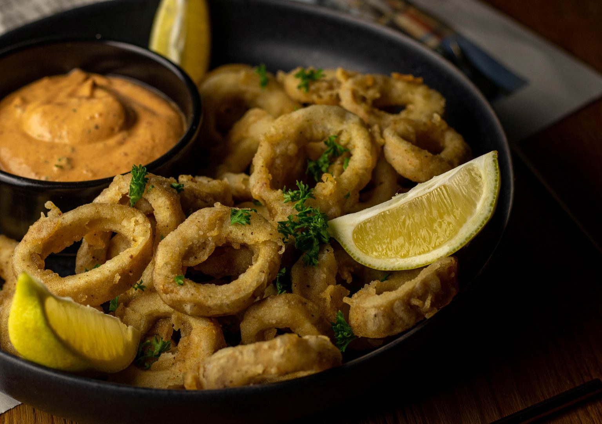

Fried Vegan Calamari

Description
With just a but of clever chopping and cutting you can turn king oyster mushrooms into crispy AF vegan calamari!
Ingredients
For the mushrooms
- 3 to 4 king oyster mushrooms
- 2 lemon wedges, as garnish
- finely chopped parsley, as garnish (optional)
For the batter
- 1/2 C all-purpose flour
- 1/2 C cornstarch
- 1/8 tsp ground cayenne pepper
- 1/8 tsp smoked paprika
- 1/4 tsp garlic powder
- 1 tsp sea salt
- 1 tsp ground black pepper
- up to 1C club soda
For frying
- vegetable oil, safe for frying
Steps
- Slice mushroom stems width-wise into 1/8-inch and 1/4-inch rounds. Reserve the mushroom tops for another use.
- Depending on the thickness of your oyster mushroom stems, use a 1/2-inch round cookie cutter or the round end of a metal piping tip to punch holes into the center of each mushroom round. You’ll also batter and fry up the inside circles you punch out.
- You can deep fry in a large flat-bottomed pot or a deep fryer. After doing the deep fryer method in the video above, I actually recommend doing this with a pot with a thermometer attached. This way you have more control over separating the mushroom pieces. I found they sank, and stuck to the bottom of the fry basket! If using the pot ensure you add enough vegetable oil so you have at least 2-inches of oil on the bottom. Ensure oil is heated to 350°F before frying the mushrooms.
- To make the batter, in a medium bowl whisk together all-purpose flour, cornstarch, cayenne pepper, smoked paprika, garlic powder, sea salt, and ground pepper until well combined. Slowly add the club soda while whisking until you get a pancake-like batter. You might not use the entire 1 cup of club soda to achieve this consistency. It should stick well to the mushroom pieces and not drip off too much.
- Working in batches, add half the mushroom pieces to the batter and toss to evenly coat with your hands. Tap off the excess and gently add a couple pieces at a time to the frying oil.
- Use a wooden spoon or chopstick to separate the mushroom pieces, while frying so they don’t stick together.
- Once the pieces float to the surface in about 2 minutes, flip and fry the other side for about 2 more minutes. It should take about 4 to 5 minutes total to reach a nice golden brown color.
- Remove the fried mushrooms with a slotted spoon onto a paper towel lined baking sheet or large platter. Repeat until all remaining mushroom pieces are fried.
- Squeeze some lemon juice over the vegan calamari just before serving and use the tartar sauce from the hot for food cookbook for dipping or use a pre-made vegan tartar sauce. Regular shrimp cocktail sauce is also vegan friendly, or you can whip up your own by combining ketchup and horseradish. That’s all it is anyway! You could add a bit of garlic and/or lemon juice if you really want!